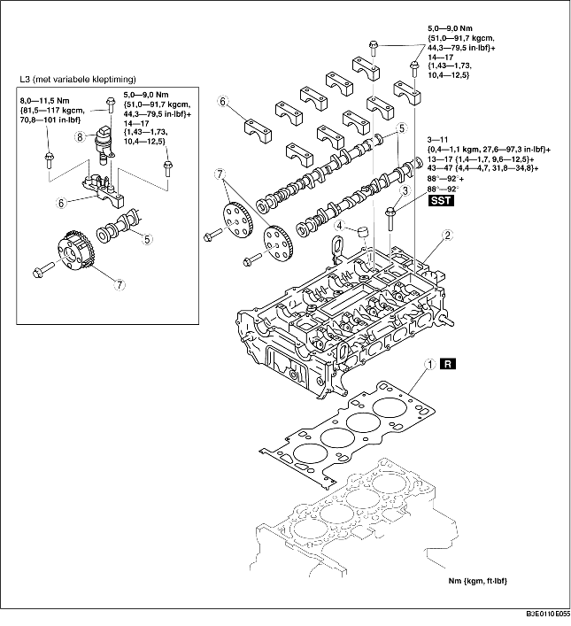

1. Plaats de onderdelen in de aangegeven volgorde, zie de tabel.

.
1. Draai de cilinderkopbouten in de aangegeven volgorde in 5 stappen vast met SST (49 D032 316).
1. Zet de zuiger van cilinder nr. 1 in het bovenste dode punt (BDP) en plaats de nokkenas.
2. Draai de bouten van de nokkenaslagerkappen tijdelijk en gelijkmatig vast in 2-3 stappen.
3. Draai de bouten van de nokkenaslagerkap in de aangegeven volgorde in twee stappen vast.
1. Draai de bevestigingsbouten van het nokkenastandwiel of de servo variabele kleptiming (L3 met variabele kleptiming) tijdelijk met de hand vast tot de distributieketting is geplaatst.
2. Draai de bevestigingsbouten van het nokkenastandwiel of de servo variabele kleptiming (L3 met variabele kleptiming) volledig vast als de distributieketting is geplaatst.